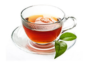
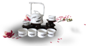
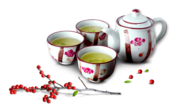

冲泡方法
brewing method
山国饮艺茶艺师介绍说，不同茶叶起作用也不一样，想发挥茶叶的功效就要学会不同茶叶的冲泡方法。
温具
用热水冲淋茶壶，包括壶嘴、壶盖，同时冲淋茶杯，随后即将茶壶、茶杯沥干温具的目的是提高茶具温度，使茶叶冲泡后温度相对稳定。

置茶
按茶壶或茶杯的大小，往泡茶的壶（杯）里置入一定数量的茶叶。置入茶叶后，可以观赏壶（杯）里的茶叶形状与颜色。如果你所用来泡茶的是白色盖碗。

冲泡
置茶入壶（杯）后，按照茶与水的比例，将开水冲入壶中。冲水时，除乌龙茶冲水须溢出壶口、壶嘴外，通常以冲水八分满为宜。如果使用玻璃杯或白瓷杯冲泡。

倒茶
冲泡好的茶应先倒进茶海里，然后再从茶海倒进客人的茶杯（品茗杯）中。茶海又称公道杯，取分茶公道之意。
奉茶
奉茶时，需要用茶盘托着送给客人，放置客人右手前方。奉茶的时候，主人还须用空余的手做出请茶的姿势，此时客人可用右手食指和中指并拢弯曲，轻轻敲打桌面，以表谢意。
品茶
茶泡好之后不可急于饮用，而是应该先观色察形，接着端杯闻香，再啜汤赏味。赏味时，应让茶汤从舌尖沿舌两侧流到舌根，再回到舌头，如此反复二三次，以留下茶汤清香甘甜的回味。